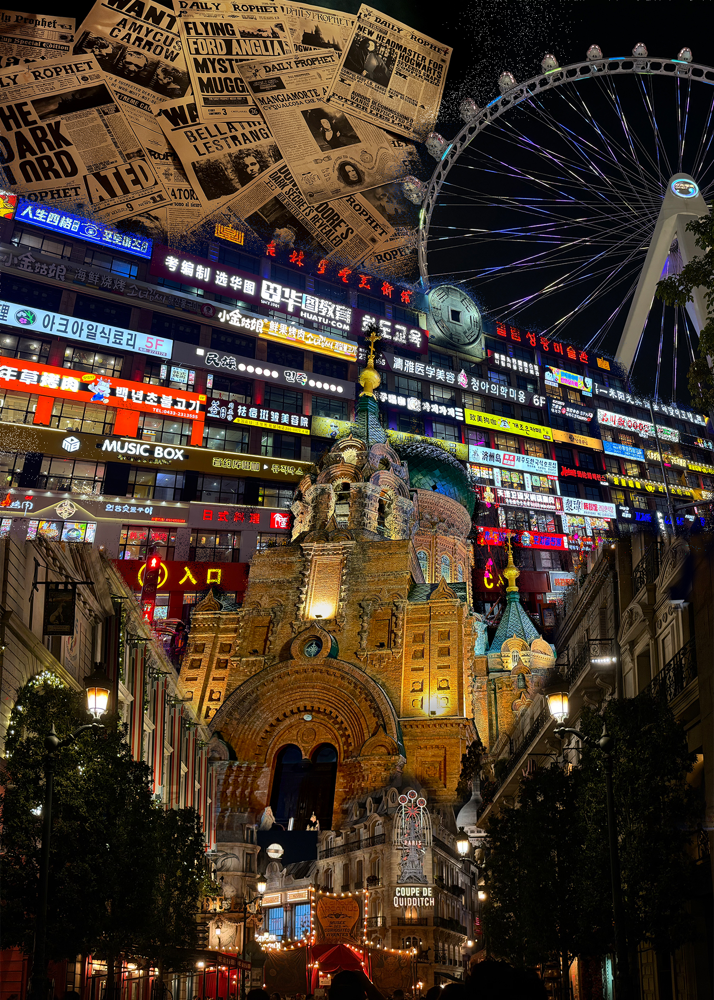

This work centers on the visual narrative of “Black Magic Wanted,” blending elements from the real world and the magical world to explore the sense of instability and latent destructiveness arising from their collision and conflict. The composition collages the architectural landscape of Universal Studios with imagery from the magical world of Harry Potter, while incorporating real-world architecture. This blurs the boundaries between different spaces and worlds, creating a state of chaos that exists between reality and fantasy—symbolizing the erosion and impact that magical forces might inflict upon the real world.
During the production process, I used Adobe Photoshop to composite multiple images and applied layer masks to blend different buildings with the background, creating natural transitions between elements rather than simply stacking them. For the blending modes, I selected “Dissolve” as one of the effects to enhance the sense of fragmentation and instability in the image, echoing the theme of “dark magic eroding reality.” At the same time, by combining opacity adjustments with multi-layer stacking, I created a visual effect that is rich in depth and imbued with a sense of conflict.